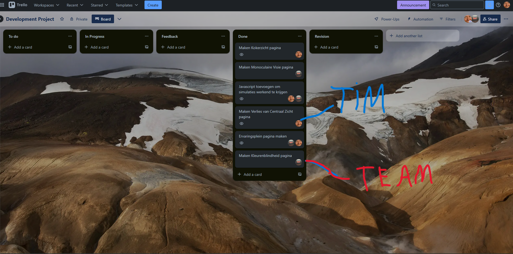

Menu
Het Development Project is het vervolg op het Create That UX-project. In dit project hebben wij de digitale ervaring verder uitgewerkt en daadwerkelijk ontwikkeld. De focus lag hierbij op het realiseren van een interactieve en toegankelijke webapplicatie gebaseerd op de eerder ontworpen UX-ervaringen voor visuele beperkingen.
Het doel van dit project was om het Create-That-UX project nu volledig werkend te krijgen, met een ervaringsplein, en vier ervaringen die volledig uitgeprobeerd konden worden.
De projectplanning hebben we ook gestructureerd aangepakt. Ik maakte de twee ervaringen die ik tijdens het Create-That-UX project al ontworpen had. Mijn projectpartner nam de ervaring die hij zelf eerder had gemaakt opnieuw op zich, en nam daarnaast de ervaring van een andere oud-groepsgenoot over. Omdat we samen in dezelfde UX-projectgroep hadden gezeten, konden we eenvoudig voortbouwen op wat we eerder hadden gemaakt.

Trello Board met taken
Ik was verantwoordelijk voor de implementatie van de simulatie voor centraal zicht en kokerzicht. Hier zie je de eindresultaten, inclusief een interactieve ervaring, waarin je de simulaties zelf kunt proberen.
Gedurende dit project maakten we gebruik van GitHub om onze ontwikkelde code op een georganiseerde manier te beheren. Hierdoor konden we eenvoudig de voortgang bijhouden en tegelijkertijd aan verschillende onderdelen werken zonder elkaars werk te overschrijven.
We gebruikten ook GitHub Issues om de taken onder elkaar te verdelen en overzicht te houden. Zo wisten we steeds wat nog gedaan moest worden en konden we snel bijsturen als iets niet werkte. Daarnaast was het handig om eerdere versies van de code te kunnen terughalen als dat nodig was.
Wil je meer leren over hoe we GitHub gebruikten om deze ervaringen te ontwikkelen? Bekijk dan de volledige code op onze GitHub Repository.
Tijdens het ontwikkelen van het ervaringsplein heb ik de ervaringen meerdere keren laten testen door mensen uit mijn directe omgeving — zoals vrienden, familie, kennissen en een aantal medestudenten van de opleiding (maar niet uit mijn eigen klas). Deze testrondes leverden waardevolle feedback op waarmee ik de gebruiksvriendelijkheid en duidelijkheid van de pagina verder heb verbeterd.
Een veelgehoorde opmerking was dat er bij het openen van de pagina direct een grote hoeveelheid tekst te zien was. Bezoekers gaven aan liever eerst een visueel overzicht van de ervaringen te willen, in plaats van lange paragrafen. Op basis hiervan heb ik de tekst herschreven en korter gemaakt, en verdeeld over meerdere secties met duidelijke koppen. De inhoud is ook visueel onderbroken door afbeeldingen, zodat het geheel minder overweldigend oogt.
Sommige testers wisten in eerste instantie niet waar ze moesten klikken om een simulatie te starten. De knoppen waren te subtiel vormgegeven. Ik heb dit aangepast door de klikbare blokken een opvallender ontwerp te geven, inclusief een hover-effect en duidelijke tekst zoals "Start ervaring" of "Bekijk simulatie".
Een paar mensen begonnen met de kleurenblindheid-simulatie en vonden die meteen lastig. Daarom heb ik de volgorde van de ervaringen aangepast, zodat gebruikers starten met een eenvoudigere ervaring zoals monoculair zicht. De meer complexe of intensieve ervaringen volgen daarna.
Verschillende testers gaven aan dat ze niet precies wisten wat ze konden verwachten wanneer ze op een blok klikten. Er stond alleen een titel, zonder verdere context. Nu bevat elk ervaringsblok een korte beschrijving van wat je gaat doen, zodat gebruikers beter voorbereid zijn.
Op mobiele telefoons versprongen de blokken soms en was de tekst lastig leesbaar. Met behulp van media queries heb ik de layout aangepast zodat deze zich netjes aanpast aan kleinere schermen. Knoppen zijn groter gemaakt en de tekst schaalt nu beter mee.
Een subtiele maar belangrijke opmerking kwam van meerdere testers: als je met je muis over een knop ging, gebeurde er niets visueels. Daardoor voelde het alsof de site "niet reageerde". Dit heb ik opgelost door animaties en hover-effecten toe te voegen aan alle interactieve elementen.
Dankzij deze feedback heb ik het ervaringsplein kunnen verbeteren tot een toegankelijk, overzichtelijk en gebruiksvriendelijk platform dat uitnodigt om de verschillende simulaties te verkennen. Het iteratieve testen heeft laten zien hoe waardevol het is om met een frisse blik naar je ontwerp te laten kijken — en hoe kleine aanpassingen een groot verschil maken.
Het project begon met het ontwerpen van interactieve simulaties die visuele beperkingen, zoals kokerzicht en verlies van centraal zicht, moesten nabootsen. Hiervoor gebruikte ik Figma als ontwerptool. Figma maakte het mogelijk om snel prototypen te ontwikkelen en verschillende ontwerpvarianten uit te proberen, zonder dat er al code geschreven hoefde te worden.
Tijdens het ontwerpproces was het belangrijk dat de ontwerpen zowel visueel aantrekkelijk als toegankelijk waren. Dit betekende dat ik goed moest nadenken over contrast, gebruiksvriendelijke interfaces en duidelijke navigatie. Het Figma-bestand fungeerde als een leidraad voor de ontwikkelfase, waarin ik de ontwerpen omzette naar werkende prototypes.
Hier kun je het originele Create-That-UX Figma bestand bekijken waarop de development versie is gebaseerd: Bekijk Figma.
Het Development Project was een leerzame ervaring waarin ik veel heb geleerd — niet alleen over het technische aspect van het ontwikkelen van webapplicaties, maar ook over hoe belangrijk het is om duidelijke afspraken te maken en overzicht te houden tijdens het samenwerken. Ik heb mijn vaardigheden in Git verder ontwikkeld door Visual Studio Code te koppelen aan GitHub, waardoor ik mijn code eenvoudig kon beheren en bijwerken. Het gebruik van Codespaces stelde me in staat om mijn code direct te testen in een gesimuleerde ontwikkelomgeving, wat de efficiëntie van het project ten goede kwam.
Door het proces van ontwerpen en ontwikkelen te combineren, kreeg ik een goed inzicht in hoe belangrijk het is om vooraf goed na te denken over de gebruikerservaring en toegankelijkheid. Het was soms een uitdaging om de ontwerpkeuzes vanuit Figma om te zetten naar werkende code, maar door telkens feedback te vragen en te blijven verbeteren, kwam alles uiteindelijk samen.
Het belangrijkste dat ik uit dit project heb geleerd, is hoe waardevol iteratie is. Fouten maken hoort erbij — als je er maar van leert. Het moment dat alles echt werkte zoals bedoeld gaf veel voldoening, en dit project heeft mijn zelfvertrouwen als ontwerper en ontwikkelaar flink vergroot.